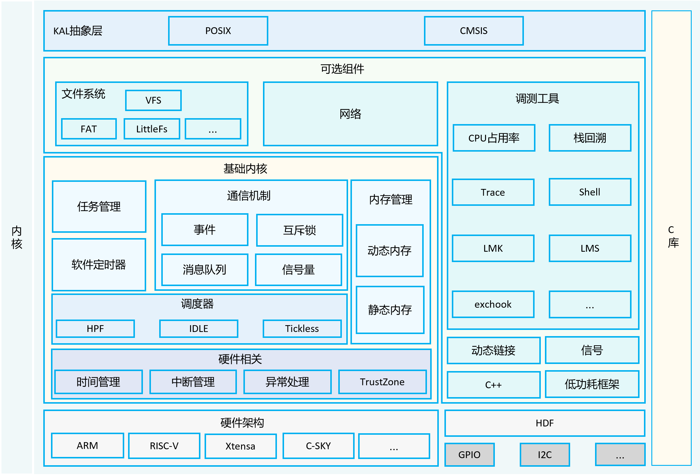
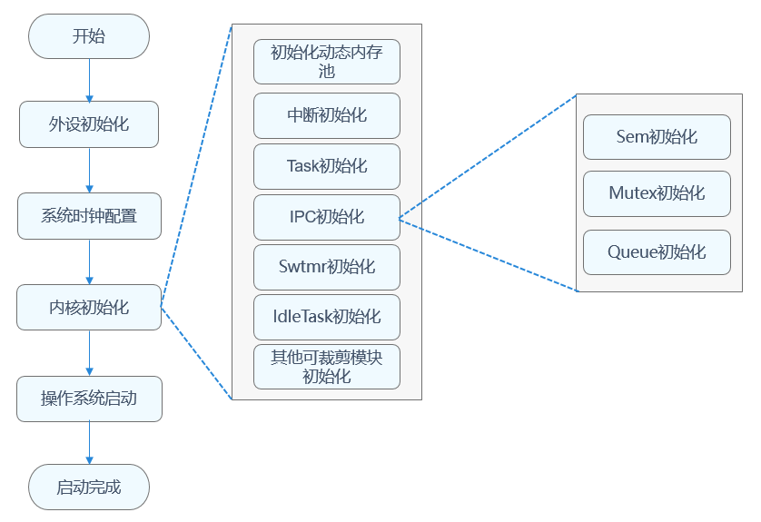

第四章 内核接口
4.1 内核概述¶
4.1.1 内核支持设备¶
OpenHarmony按照支持的设备可分为如下几种系统类型：
- 轻量系统（mini system） 面向MCU类处理器例如Arm Cortex-M、RISC-V 32位的设备，硬件资源极其有限，支持的设备最小内存为128KiB，可以提供多种轻量级网络协议，轻量级的图形框架，以及丰富的IOT总线读写部件等。可支撑的产品如智能家居领域的连接类模组、传感器设备、穿戴类设备等。
- 小型系统（small system） 面向应用处理器例如Arm Cortex-A的设备，支持的设备最小内存为1MiB，可以提供更高的安全能力、标准的图形框架、视频编解码的多媒体能力。可支撑的产品如智能家居领域的IP Camera、电子猫眼、路由器以及智慧出行域的行车记录仪等。
- 标准系统（standard system） 面向应用处理器例如Arm Cortex-A的设备，支持的设备最小内存为128MiB，可以提供增强的交互能力、3D GPU以及硬件合成能力、更多控件以及动效更丰富的图形能力、完整的应用框架。可支撑的产品如高端的冰箱显示屏。
OpenHarmony针对不同量级的系统，使用了不同形态的内核。轻量系统、小型系统可以选用LiteOS；小型系统和标准系统可以选用Linux。其对应关系如下表：
表1 系统关系对应表
| 系统级别 | 轻量系统 | 小型系统 | 标准系统 |
|---|---|---|---|
| LiteOS-M | √ | × | × |
| LiteOS-A | × | √ | √ |
| Linux | × | √ | √ |
4.1.2 LiteOS-M内核¶
OpenHarmony LiteOS-M内核是面向IoT领域构建的轻量级物联网操作系统内核，具有小体积、低功耗、高性能的特点，其代码结构简单，主要包括内核最小功能集、内核抽象层、可选组件以及工程目录等，分为硬件相关层以及硬件无关层，硬件相关层提供统一的HAL（Hardware Abstraction Layer）接口，提升硬件易适配性，不同编译工具链和芯片架构的组合分类，满足AIoT类型丰富的硬件和编译工具链的拓展。

4.1.3 LiteOS-A内核¶
LiteOS-A内核主要应用于小型系统，面向设备一般是M级内存，可支持MMU（Memory Management Unit）隔离，业界类似的内核有Zircon或Darwin等。
轻量级内核LiteOS-A重要的新特性如下：
-
新增了丰富的内核机制：
- 新增虚拟内存、系统调用、多核、轻量级IPC（Inter-Process Communication，进程间通信）、DAC（Discretionary Access Control，自主访问控制）等机制，丰富了内核能力；
- 为了更好的兼容软件和开发者体验，新增支持多进程，使得应用之间内存隔离、相互不影响，提升系统的健壮性。
-
引入统一驱动框架HDF（Hardware Driver Foundation）
引入统一驱动框架HDF，统一驱动标准，为设备厂商提供了更统一的接入方式，使驱动更加容易移植，力求做到一次开发，多系统部署。
-
支持1200+标准POSIX接口
更加全面的支持POSIX标准接口，使得应用软件易于开发和移植，给应用开发者提供了更友好的开发体验。
-
内核和硬件高解耦
轻量级内核与硬件高度解耦，新增单板，内核代码不用修改。

4.1.4 Linux内核¶
OpenHarmony的Linux内核基于开源Linux内核LTS 4.19.y / 5.10.y 分支演进，在此基线基础上，回合CVE补丁及OpenHarmony特性，作为OpenHarmony Common Kernel基线。针对不同的芯片，各厂商合入对应的板级驱动补丁，完成对OpenHarmony的基线适配，主要用于标准系统。
4.2 轻量系统内核(LiteOS-M)¶
4.2.1 内核概述¶
OpenHarmony LiteOS-M内核架构包含硬件相关层以及硬件无关层，如下图所示，其中硬件相关层按不同编译工具链、芯片架构分类，提供统一的HAL（Hardware Abstraction Layer）接口，提升了硬件易适配性，满足AIoT类型丰富的硬件和编译工具链的拓展；其他模块属于硬件无关层，其中基础内核模块提供基础能力，扩展模块提供网络、文件系统等组件能力，还提供错误处理、调测等能力，KAL（Kernel Abstraction Layer）模块提供统一的标准接口。

4.2.2 内核启动流程¶
在开发板配置文件target_config.h配置系统时钟、每秒Tick数，可以对任务、内存、IPC、异常处理模块进行裁剪配置。系统启动时，根据配置进行指定模块的初始化。内核启动流程包含外设初始化、系统时钟配置、内核初始化、操作系统启动等，详见下图。

4.2.3 内核使用¶
4.3 内核接口¶
4.3.1 轻量系统的内核接口¶
轻量系统的内核(LiteOS-M)的标准化接口即KAL内核抽象层中的CMISIS和POSIX，其中POSIX部分兼容 方便Linux开发者迁移；CMSIS则适配了CMSIS-RTOS v2实时操作系统通用接口，开发者可基于此编写跨RTOS（如FreeRTOS、RT-Thread）的代码。
4.3.2 CMSIS标准¶
CMSIS（Cortex Microcontroller Software Interface Standard）是ARM公司为 Cortex-M 系列微控制器（MCU） 设计的标准化软件接口，旨在统一底层硬件操作，简化跨芯片开发。
CMSIS保护许多组件层，其中的 RTOS 层为 CMSIS-RTOS ，而LiteOS-M仅支持 CMSIS-RTOS v2 版本的API。
4.3.3 CMSIS-RTOS v2¶
CMSIS-RTOS v2 是 ARM 生态中 嵌入式实时系统的“通用语言”，其标准化接口设计大幅简化了跨平台开发。
4.4 使用内核接口¶
CMSIS-RTOS v2 通用接口就是在 LiteOS-M 原生API的基础上封装后得到的API，所以只需熟悉API就好，关于一些RTOS的同步机制等使用方法都是一致的。需要注意的是，很多地方会提到Tick周期，在hi3861芯片中默认的Tick周期为10ms（不同于FreeRTOS默认的1ms）。
Danger
此部分内容建议学习过一种RTOS再看，另外Tick周期应当可以自己配置，但我暂未找到源码中的配置文件。
4.4.1 线程管理¶
"线程"有的地方也称"任务"，都是差不多的意思。
关于线程，我们应熟悉两个概念：
- 并发 ：指的是多个任务在同一时间段内执行，这些任务可能会交替进行。操作系统通过快速地在不同任务之间进行上下文切换，让用户感觉这些任务好像是同时在执行。但实际上，在单 CPU 核心的系统中，同一时刻只有一个任务在运行。
- 并行：指的是多个任务在同一时刻同时执行。这需要系统具备多个 CPU 核心或者多个处理器，每个任务可以分配到不同的处理单元上同时运行。
#include <stdio.h>
#include "ohos_init.h"
#include "cmsis_os2.h"
/**
* thread_basic.c
* 线程管理案例
* 创建两个线程，其中一个使用线程参数。
*/
typedef struct {
int value;
char str[16];
}Data;
/* 线程要运行的函数 */
void Rtosv2Thread1(void* params)
{
/* 接收线程参数 */
Data* data_;
data_ = params;
/* 系统级延时函数，延时10个Tick */
osDelay(100);
/* 获取当前线程的ID */
osThreadId_t thread1Id = osThreadGetId();
printf("[INFO]Thread ID: %p\r\n", thread1Id);
/* 处理参数 */
printf("[INFO]%d %f\r\n", data_->value, data_->str);
/* 主程序 */
static int count = 0;
while (1) {
count++;
printf("[INFO]Thread1 count: %d\r\n", count);
osDelay(10);
}
}
void Rtosv2Thread2(void* params)
{
osThreadId_t thread2Id = osThreadGetId();
printf("[INFO]Thread ID: %p\r\n", thread2Id);
while (1) {
printf("[INFO]Thread2\r\n");
osDelay(20);
}
}
/* 创建任务线程 */
void ThreadTestTask(void)
{
/* 定义线程的属性结构体 */
osThreadAttr_t attr_1 = {
.name = "Thread1", // 为线程命名（必须）
.attr_bits = 0, // 一般先设为 0，有特殊属性需求时再按位设置
.cb_mem = NULL, // 若不手动分配控制块内存，可设为 NULL
.cb_size = 0, // 控制块内存大小，配合 cb_mem使用，设为 0表示使用默认方式
.stack_mem = NULL, // 若不手动分配栈内存，可设为 NULL
.stack_size = 1024, // 为线程分配栈大小，这里设为 1024字节，需根据实际需求调整（必须）
.priority = osPriorityNormal, // 设置线程优先级为正常优先级（必须）
.tz_module = 0, // TrustZone模块标识符，若无特殊需求设为 0
.reserved = 0 // 保留字段设为 0
};
osThreadAttr_t attr_2 = {
.name = "Thread2",
.stack_size = 1024,
.priority = osPriorityNormal
};
/* 定义线程参数 */
Data data = { 12, "OpenHarmony" };
/* 创建线程 */
osThreadNew(Rtosv2Thread1, &data, &attr_1);
osThreadNew(Rtosv2Thread2, NULL, &attr_2);
}
APP_FEATURE_INIT(ThreadTestTask);
4.4.2 软件定时器¶
#include <stdio.h>
#include "ohos_init.h"
#include "cmsis_os2.h"
/**
* timer_basic.c
* 软件定时器案例
* 创建定时器，每 1s 调用一次回调函数使得计数值加一，主线程中等待 5s 删除定时器。
*/
osTimerId_t g_timerID;
static uint8_t g_cnt = 0;
/* 回调函数 */
void time_out_callback(void* params)
{
g_cnt++;
printf("[Callback] Timeout! ->%d\r\n", g_cnt);
}
/* 主线程函数 */
void MainThread(void* params)
{
/* 定时器属性参数 */
osTimerAttr_t attr_timer = {
.name = "SoftTimer",
.attr_bits = 0,
.cb_mem = NULL,
.cb_size = 0
};
/* 创建定时器 */
g_timerID = osTimerNew(time_out_callback, osTimerPeriodic, NULL, &attr_timer);
/* 判断g_timerID，定时器是否创建成功 */
if (g_timerID != NULL) {
printf("[Timer Create] 定时器创建成功！\r\n");
} else {
printf("[Timer Create] 定时器创建失败！\r\n");
}
/* 打开定时器，定时1s */
osTimerStart(g_timerID, 100);
/* 阻塞3s */
osDelay(500);
while(1) {
/* 判断定时器是否超时3次 */
if (g_cnt > 3) {
/* 若定时器存在，停止并删除定时器 */
if (g_timerID != NULL) {
osTimerStop(g_timerID);
osTimerDelete(g_timerID);
printf("[Timer Delete] 定时器删除成功！\r\n");
/* 自杀线程 */
osThreadExit();
g_timerID = NULL;
}
}
osDelay(10);
}
}
/* 创建任务线程 */
void TimerTest(void)
{
/* 定义线程的属性结构体 */
osThreadAttr_t attr_timer = {
.name = "Thread1", // 为线程命名（必须）
.attr_bits = 0, // 一般先设为 0，有特殊属性需求时再按位设置
.cb_mem = NULL, // 若不手动分配控制块内存，可设为 NULL
.cb_size = 0, // 控制块内存大小，配合 cb_mem使用，设为 0表示使用默认方式
.stack_mem = NULL, // 若不手动分配栈内存，可设为 NULL
.stack_size = 1024, // 为线程分配栈大小，这里设为 1024字节，需根据实际需求调整（必须）
.priority = osPriorityNormal, // 设置线程优先级为正常优先级（必须）
.tz_module = 0, // TrustZone模块标识符，若无特殊需求设为 0
.reserved = 0 // 保留字段设为 0
};
/* 创建线程 */
osThreadNew(MainThread, NULL, &attr_timer);
}
APP_FEATURE_INIT(TimerTest);
4.4.3 互斥锁¶
#include <stdio.h>
#include "ohos_init.h"
#include "cmsis_os2.h"
/**
* mutex_demo.c
* 互斥锁案例
* 多线程访问同一个变量，用互斥锁实现安全访问。同时实现多线程使用同一个任务函数，判断全局变量的奇偶性。
*/
/* 多个线程需要访问的全局变量 */
static int g_param = 0;
/* 任务函数 */
void CountThread(void* params)
{
/* 接收线程参数 */
osMutexId_t *mid = params;
/* 线程主循环 */
while(1)
{
/* 获取互斥锁A，超时时间为100ms，若成功返回"osOK" */
if(osMutexAcquire(*mid, 100) == osOK) {
g_param++;
/* g_param为偶数 */
if (g_param % 2 == 0) {
printf("[g_param] 偶数-> %d\r\n", g_param);
}
/* g_param为奇数 */
else {
printf("[g_param] 奇数-> %d\r\n", g_param);
}
printf("[Info] 任务处理完成！\r\n");
}
/* 释放互斥锁A */
osMutexRelease(*mid);
/* 完成一次任务阻塞50ms，给其他同优先级的任务执行的时间 */
osDelay(50);
}
}
/**
* @brief 创建线程，封装成一个函数，便于调用
* @param name：线程名称
* @param func：线程函数
* @param arg：线程函数的参数
* @return 返回线程ID
*/
osThreadId_t newThread(char *name_, osThreadFunc_t func, void *arg)
{
osThreadAttr_t attr = {
.name = name_,
.stack_size = 1024,
.priority = osPriorityNormal
};
osThreadId_t tid = osThreadNew(func, arg, &attr);
if (tid == NULL) {
printf("[Thread Create] osThreadNew(%s) failed.\r\n", name_);
} else{
printf("[Thread Create] osThreadNew(%s) success, thread id: %d.\r\n", name_, tid);
}
return tid;
}
/* 主函数 */
void Main_Mutex(void* params)
{
/* 定义互斥锁 */
osMutexId_t g_MutexId_A;
/* 互斥锁属性 */
osMutexAttr_t attr_mutex = {
.name = "Mutex_A",
.attr_bits = 0,
.cb_mem = NULL,
.cb_size = 0
};
/* 创建互斥锁 */
g_MutexId_A = osMutexNew(&attr_mutex);
/* 判断互斥锁是否创建成功 */
if (g_MutexId_A != NULL) {
printf("[Mutex Create] Ok!\r\n");
} else {
printf("[Mutex Create] Error!\r\n");
}
/* 创建三个线程 */
osThreadId_t tid1 = newThread("Thread_1", CountThread, &g_MutexId_A);
osThreadId_t tid2 = newThread("Thread_2", CountThread, &g_MutexId_A);
osThreadId_t tid3 = newThread("Thread_3", CountThread, &g_MutexId_A);
osDelay(10);
/* 获得当前占用互斥锁的线程ID */
osThreadId_t tid = osMutexGetOwner(g_MutexId_A);
printf("[Mutex Owner] osMutexGetOwner, thread id: %p, thread name: %s.\r\n", tid, osThreadGetName(tid));
osDelay(100);
/* 终止线程 */
osThreadTerminate(tid1);
osThreadTerminate(tid2);
osThreadTerminate(tid3);
/* 删除互斥锁A */
osMutexDelete(g_MutexId_A);
}
/* 入口函数 */
static void MutexTestTask(void)
{
/* 线程属性 */
osThreadAttr_t attr = {
.name = "MutexTestTask",
.stack_size = 1024,
.priority = osPriorityNormal
};
/* 创建一个线程，并将其加入活跃线程组中 */
if (osThreadNew((osThreadFunc_t)Main_Mutex, NULL, &attr) == NULL)
{
printf("[MutexTestTask] Falied to create Main_Mutex!\n");
}
}
APP_FEATURE_INIT(MutexTestTask);
4.4.4 信号量¶
#include <stdio.h>
#include <string.h>
#include <malloc.h>
#include "ohos_init.h"
#include "cmsis_os2.h"
// 工人的数量
#define WORKER_NUMBER 7 //3861实测最多开8个线程，主线程占用1个，剩余7个线程
// 机器的数量
#define MACHINE_NUMBER 4
// 信号量：机器
osSemaphoreId_t semMachine;
// 工人线程函数
void worker_thread(void *arg)
{
(void)arg;
while (1)
{
// 获取指定信号量的一个令牌（token），若获取失败（获取不到），则等待
// osWaitForever：永远等待，不会超时
// 工人线程先获取semMachine的一个令牌，来确认是否有空闲的机器供使用
// 如果没有空闲的机器，则工人线程进入等待状态，直到有空闲的机器
osSemaphoreAcquire(semMachine, osWaitForever);
// 上面的函数是阻塞式的，如果执行完毕，说明有空闲机器了，工人开始使用机器
// 输出日志
printf("%s GOT a machine!\r\n", osThreadGetName(osThreadGetId()));
// 模拟使用机器的时间
osDelay(100);
// 输出日志
printf("%s RETURN a machine!\r\n", osThreadGetName(osThreadGetId()));
// 释放（归还）指定信号量的一个令牌，这样其它工人线程就可以继续使用机器了
// 令牌的数量，不超过信号量可以容纳的令牌的最大数量
osSemaphoreRelease(semMachine);
}
}
// 创建线程，返回线程ID。封装成一个函数，便于调用
// name：线程名称
// func：线程函数
// arg：线程函数的参数
osThreadId_t newThread(char *name, osThreadFunc_t func, void *arg)
{
//把name参数在内存中建立一个拷贝，供新创建的线程使用
char *threadName = (char *)malloc(strlen(name) + 1);
strncpy(threadName, name, strlen(name) + 1);
osThreadAttr_t attr = {
threadName, 0, NULL, 0, NULL, 1024 * 2, osPriorityNormal, 0, 0};
osThreadId_t tid = osThreadNew(func, arg, &attr);
if (tid == NULL)
{
printf("[Semp Test]osThreadNew(%s) failed.\r\n", name);
}
else
{
printf("[Semp Test]osThreadNew(%s) success, thread id: %d.\r\n", name, tid);
}
return tid;
}
// 主线程函数
void rtosv2_semp_main(void *arg)
{
(void)arg;
// 延迟1秒，避免跟系统输出混淆在一起
osDelay(100);
// 创建并且初始化一个信号量semMachine，最多5个令牌，初始5个令牌
// 令牌的数量，可以理解为空闲的机器的数量。线程拿到令牌，使用机器，使用完了，线程归还令牌
// max_count：信号量可以容纳的令牌的最大数量
// initial_count：信号量容纳的令牌的初始数量
// attr：信号量属性，目前没有用到
semMachine = osSemaphoreNew(MACHINE_NUMBER, MACHINE_NUMBER, NULL);
// 创建工人线程（方式1）
for (int i = 0; i < WORKER_NUMBER; i++)
{
char tname[64] = "";
snprintf(tname, sizeof(tname), "worker%d", i);
newThread(tname, worker_thread, NULL);
osDelay(50);
}
// 创建工人线程（方式2）
// newThread("worker1", worker_thread, NULL);
// newThread("worker2", worker_thread, NULL);
// newThread("worker3", worker_thread, NULL);
// newThread("worker4", worker_thread, NULL);
// newThread("worker5", worker_thread, NULL);
// newThread("worker6", worker_thread, NULL);
// newThread("worker7", worker_thread, NULL);
// osDelay(50);
// osSemaphoreDelete(empty_id);
}
// 入口函数
static void SempTestTask(void)
{
// 线程属性
osThreadAttr_t attr;
attr.name = "rtosv2_semp_main";
attr.attr_bits = 0U;
attr.cb_mem = NULL;
attr.cb_size = 0U;
attr.stack_mem = NULL;
attr.stack_size = 1024;
attr.priority = osPriorityNormal;
// 创建一个线程，并将其加入活跃线程组中
if (osThreadNew((osThreadFunc_t)rtosv2_semp_main, NULL, &attr) == NULL)
{
printf("[SempTestTask] Falied to create rtosv2_semp_main!\n");
}
}
// 运行入口函数
APP_FEATURE_INIT(SempTestTask);
4.4.5 消息队列¶
#include <stdio.h>
#include "ohos_init.h"
#include "cmsis_os2.h"
// 消息队列的大小
#define QUEUE_SIZE 3
// 定义消息的数据结构
typedef struct
{
osThreadId_t tid;
int count;
} message_entry;
// 保存消息队列的ID
osMessageQueueId_t qid;
// 消息发送者线程函数
void sender_thread(void *arg)
{
(void)arg;
// 一个公共计数器
static int count = 0;
// 定义一个消息
message_entry sentry;
// 开始工作循环
while (1)
{
// 将当前线程的ID放入消息中
sentry.tid = osThreadGetId();
// 将公共计数器的值放入消息中
sentry.count = count;
// 输出日志
printf("[Message Test] %s send %d to message queue.\r\n", osThreadGetName(osThreadGetId()), count);
// 将消息放入消息队列中
// 如果消息队列已满，则会等待消息队列的空位，直到消息队列有空位，才会放入消息
//
// 参数:
// mq_id：通过osMessageQueueNew拿到的消息队列ID
// msg_ptr：要放入消息队列的消息的指针
// msg_prio：要放入消息队列的消息的优先级，当前未使用
// timeout：超时时间
// 返回:
// CMSIS-RTOS运行结果，参考kernel\liteos_m\kal\cmsis\cmsis_os2.h
//
// 注意：
// 第二个参数msg_ptr是要放入消息队列的消息的指针，在消息进队列的时候，是复制一份进去的
// 可以跟一下源码：osMessageQueuePut->LOS_QueueWriteCopy->OsQueueOperate->OsQueueBufferOperate->memcpy_s()
// 所以循环使用sentry是不会有问题的
//
// 可以不去拿返回值，但是这样做就无法确保消息发出去了
osMessageQueuePut(qid, (const void *)&sentry, 0, osWaitForever);
// 每发送一次消息，计数器加1
count++;
osDelay(5);
}
}
// 消息接收者线程函数
void receiver_thread(void *arg)
{
(void)arg;
// 定义一个消息
message_entry rentry;
// 开始工作循环
while (1)
{
// 从消息队列中取出消息
// 如果消息队列为空，则会等待消息队列的消息，直到消息队列有消息，才会取出消息
//
// 参数:
// mq_id：通过osMessageQueueNew拿到的消息队列ID
// msg_ptr：一个消息的指针，用于接收从消息队列中取出的消息
// msg_prio：一个消息优先级的指针，用于接收从消息队列中取出的消息优先级，当前未使用，传入NULL即可
// timeout：超时时间
// 返回:
// CMSIS-RTOS运行结果，参考kernel\liteos_m\kal\cmsis\cmsis_os2.h
osMessageQueueGet(qid, (void *)&rentry, NULL, osWaitForever);
// 输出日志
printf("[Message Test] %s get %d from %s by message queue.\r\n", osThreadGetName(osThreadGetId()), rentry.count, osThreadGetName(rentry.tid));
osDelay(3);
}
}
// 创建线程，返回线程ID。封装成一个函数，便于调用
osThreadId_t newThread(char *name, osThreadFunc_t func, void *arg)
{
osThreadAttr_t attr = {
name, 0, NULL, 0, NULL, 1024 * 2, osPriorityNormal, 0, 0};
osThreadId_t tid = osThreadNew(func, arg, &attr);
if (tid == NULL)
{
printf("[Message Test] osThreadNew(%s) failed.\r\n", name);
}
else
{
printf("[Message Test] osThreadNew(%s) success, thread id: %d.\r\n", name, tid);
}
return tid;
}
// 主线程函数
void rtosv2_msgq_main(void *arg)
{
(void)arg;
// 创建并且初始化一个消息队列
// 参数:
// msg_count：消息队列中可以容纳的消息的最大数量
// msg_size：消息队列中每条消息的最大长度
// attr：消息队列属性。当前未使用，可以传入NULL。
// 返回:
// 成功返回消息队列的ID，失败返回NULL。
qid = osMessageQueueNew(QUEUE_SIZE, sizeof(message_entry), NULL);
// 创建两个消息接收者线程，三个消息发送者线程
osThreadId_t ctid1 = newThread("recevier1", receiver_thread, NULL);
osThreadId_t ctid2 = newThread("recevier2", receiver_thread, NULL);
osThreadId_t ptid1 = newThread("sender1", sender_thread, NULL);
osThreadId_t ptid2 = newThread("sender2", sender_thread, NULL);
osThreadId_t ptid3 = newThread("sender3", sender_thread, NULL);
// 等待一段时间（让消息发送者线程和消息接收者线程都运行一段时间）
osDelay(100);
// 获取消息队列中可以容纳的消息的最大数量
uint32_t cap = osMessageQueueGetCapacity(qid);
printf("[Message Test] osMessageQueueGetCapacity, capacity: %d.\r\n", cap);
// 获取消息队列中每条消息的最大长度
uint32_t msg_size = osMessageQueueGetMsgSize(qid);
printf("[Message Test] osMessageQueueGetMsgSize, size: %d.\r\n", msg_size);
// 获取消息队列中当前的消息数量
uint32_t count = osMessageQueueGetCount(qid);
printf("[Message Test] osMessageQueueGetCount, count: %d.\r\n", count);
// 获取消息队列中当前还可以放置的消息数量
uint32_t space = osMessageQueueGetSpace(qid);
printf("[Message Test] osMessageQueueGetSpace, space: %d.\r\n", space);
osDelay(80);
// 终止线程
osThreadTerminate(ctid1);
osThreadTerminate(ctid2);
osThreadTerminate(ptid1);
osThreadTerminate(ptid2);
osThreadTerminate(ptid3);
// 删除消息队列
osMessageQueueDelete(qid);
}
// 入口函数
static void MessageTestTask(void)
{
osThreadAttr_t attr;
attr.name = "rtosv2_msgq_main";
attr.attr_bits = 0U;
attr.cb_mem = NULL;
attr.cb_size = 0U;
attr.stack_mem = NULL;
attr.stack_size = 1024;
attr.priority = osPriorityNormal;
if (osThreadNew((osThreadFunc_t)rtosv2_msgq_main, NULL, &attr) == NULL)
{
printf("[MessageTestTask] Falied to create rtosv2_msgq_main!\n");
}
}
// 运行入口函数
APP_FEATURE_INIT(MessageTestTask);